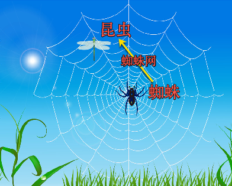
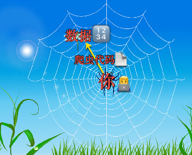

为何叫爬虫
通过下面类比，来解释为何被叫做爬虫：
| 对比 | 现实世界的蜘蛛网 | 计算机世界的互联网 |
|---|---|---|
| 图解 |  |  |
蜘蛛🕷 |
你👨💻自己 |
|
织网 = 用蜘蛛网 🕸 |
写爬虫代码📄=crawler=spider |
|
捕获=抓自己要的东西=食物=昆虫🐞 |
爬取=抓包 自己要的数据🔢(并保存) |
相关说明
互联网：是一个包含众多资源的大网络狭义上说，主要指的是：- Web领域=各种
网站=网页- 里面有各种（我们想要爬取的）数据
- 比如想要爬取汽车的车型车系，可以从
汽车之家等网站爬取
- 比如想要爬取汽车的车型车系，可以从
- 里面有各种（我们想要爬取的）数据
- Web领域=各种
广义上说包含：- （上面提到的）各种网站=网页
- 各种
app- 包括各种
Android和iOS中的app软件 - 比如想要爬取别人的app中的一些数据
- 比如爬取大众点评app中的商家和用户评论数据
- 包括各种
- 各种
其他渠道、终端的数据和资源微信公众号- 理论上也是属于
网页
- 理论上也是属于
小程序微信小程序支付宝小程序
- 等等